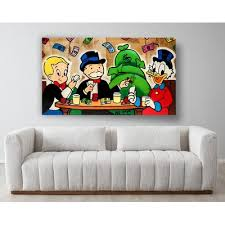

Los Secretos de la Mansión
En las sombras yace la verdad
El interior de la mansión era tan majestuoso como inquietante. Retratos antiguos colgaban de las paredes, mostrando generaciones pasadas de la familia McPato.

El Descubrimiento
Mientras caminaba por un pasillo casi oscuro, Paco encontró una fotografía diferente. En ella aparecía su tío Rico sosteniendo un pequeño cofre dorado. En la parte trasera de la imagen había una frase escrita a mano:
"El corazón dorado solo se revela ante quien elija con sabiduría."
Paco sintió que aquello no era solo una advertencia, sino una prueba.
La pregunta era clara: ¿qué decisiones debía tomar para demostrar que era digno de conocer el secreto?